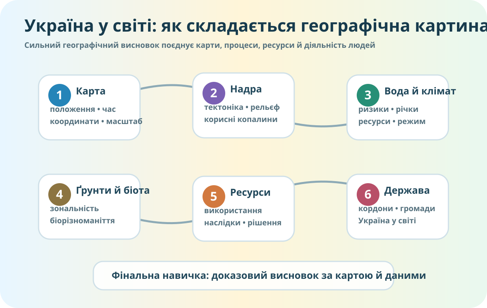

0–5 хв • ЗБИРАЄМО КУРС
Що пов’язує всі теми?

Локальна схема: шість великих блоків курсу й фінальна навичка — доказовий географічний висновок.
Швидкий виклик
Оберіть правильну логіку для трьох тверджень.
1. Чому в Карпатах інший характер річок, ніж на рівнинах?
2. Чому родовища ресурсів не розміщені випадково?
3. Чому карта ризику не є точним прогнозом?
5–18 хв • КОМПЛЕКСНА МІСІЯ
Географічне рішення для громади
Уявіть, що громада обирає місце для нового рекреаційно-освітнього центру. Потрібно оцінити рельєф, воду, кліматичні ризики, ґрунти/біоту, транспортне положення та природоохоронні обмеження.
18–27 хв • КОМПЛЕКСНА РОБОТА • 10 БАЛІВ
Спочатку представтесь
27–31 хв • CER
Фінальна теза
Теза: «Географічне положення й природні умови України створюють одночасно можливості та обмеження для розвитку».
Якість доказу
Сильний доказ має відповідати трьом питанням:
- Де? Просторова прив’язка.
- Що показують дані? Конкретний факт, карта, показник або спостереження.
- Чому це підтримує висновок? Причинний зв’язок.
Не зараховується як доказ: «бо так написано», «усі знають», «Україна велика», якщо Ви не пояснили, яке саме географічне значення має факт.
31–34 хв • САМООЦІНЮВАННЯ
Не «я молодець / я нічого не знаю», а профіль навичок
34–35 хв • НАСТУПНИЙ КРОК
Одна річ, яку варто підтягнути
Домашнє завдання
Повторіть саме той блок, який у самооцінюванні виявився найслабшим. Використайте електронний підручник / матеріали ВШО та підготуйте 1 карту або схему + 3 короткі докази + 1 висновок.
Мета домашнього — не перечитати весь курс, а закрити конкретну прогалину перед фінальним діагностуванням №70.